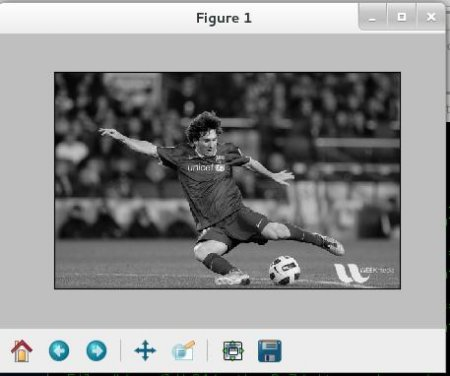

Getting Started with Images
Goals
- Here, you will learn how to read an image, how to display it and how to save it back
- You will learn these functions : cv2.imread(), cv2.imshow(), cv2.imwrite()
- Optionally, you will learn how to display images with Matplotlib
Using OpenCV
Read an image
Use the function cv2.imread() to read an image. The image should be in the working directory or a full path of image should be given.
Second argument is a flag which specifies the way image should be read.
- cv2.IMREAD_COLOR : Loads a color image. Any transparency of image will be neglected. It is the default flag.
- cv2.IMREAD_GRAYSCALE : Loads image in grayscale mode
- cv2.IMREAD_UNCHANGED : Loads image as such including alpha channel
Instead of these three flags, you can simply pass integers 1, 0 or -1 respectively.
See the code below:
import numpy as np import cv2 # Load an color image in grayscale img = cv2.imread('messi5.jpg',0)
warning
Even if the image path is wrong, it won’t throw any error, but print img will give you None
Display an image
Use the function cv2.imshow() to display an image in a window. The window automatically fits to the image size.
First argument is a window name which is a string. second argument is our image. You can create as many windows as you wish, but with different window names.
cv2.imshow('image',img) cv2.waitKey(0) cv2.destroyAllWindows()
A screenshot of the window will look like this (in Fedora-Gnome machine):

cv2.waitKey() is a keyboard binding function. Its argument is the time in milliseconds. The function waits for specified milliseconds for any keyboard event. If you press any key in that time, the program continues. If 0 is passed, it waits indefinitely for a key stroke. It can also be set to detect specific key strokes like, if key a is pressed etc which we will discuss below.
Besides binding keyboard events this function also processes many other GUI events, so you MUST use it to actually display the image.
cv2.destroyAllWindows() simply destroys all the windows we created. If you want to destroy any specific window, use the function cv2.destroyWindow() where you pass the exact window name as the argument.
There is a special case where you can already create a window and load image to it later. In that case, you can specify whether window is resizable or not. It is done with the function cv2.namedWindow(). By default, the flag is cv2.WINDOW_AUTOSIZE. But if you specify flag to be cv2.WINDOW_NORMAL, you can resize window. It will be helpful when image is too large in dimension and adding track bar to windows.
See the code below:
cv2.namedWindow('image', cv2.WINDOW_NORMAL) cv2.imshow('image',img) cv2.waitKey(0) cv2.destroyAllWindows()
Write an image
Use the function cv2.imwrite() to save an image.
First argument is the file name, second argument is the image you want to save.
cv2.imwrite('messigray.png',img)
This will save the image in PNG format in the working directory.
Sum it up
Below program loads an image in grayscale, displays it, save the image if you press ‘s’ and exit, or simply exit without saving if you press ESC key.
import numpy as np import cv2 img = cv2.imread('messi5.jpg',0) cv2.imshow('image',img) k = cv2.waitKey(0) if k == 27: # wait for ESC key to exit cv2.destroyAllWindows() elif k == ord('s'): # wait for 's' key to save and exit cv2.imwrite('messigray.png',img) cv2.destroyAllWindows()
warning
If you are using a 64-bit machine, you will have to modify k = cv2.waitKey(0) line as follows : k = cv2.waitKey(0) & 0xFF
Using Matplotlib
Matplotlib is a plotting library for Python which gives you wide variety of plotting methods. You will see them in coming articles. Here, you will learn how to display image with Matplotlib. You can zoom images, save it etc using Matplotlib.
import numpy as np import cv2 from matplotlib import pyplot as plt img = cv2.imread('messi5.jpg',0) plt.imshow(img, cmap = 'gray', interpolation = 'bicubic') plt.xticks([]), plt.yticks([]) # to hide tick values on X and Y axis plt.show()
A screen-shot of the window will look like this :
warning
Color image loaded by OpenCV is in BGR mode. But Matplotlib displays in RGB mode. So color images will not be displayed correctly in Matplotlib if image is read with OpenCV. Please see the exercises for more details.
Additional Resources
Exercises
- There is some problem when you try to load color image in OpenCV and display it in Matplotlib. Read this discussion and understand it.
See also:
Plenty of plotting options are available in Matplotlib. Please refer to Matplotlib docs for more details. Some, we will see on the way.